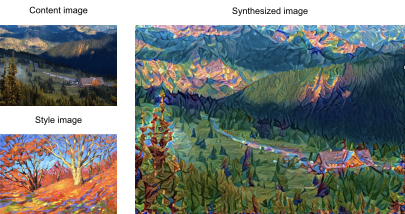
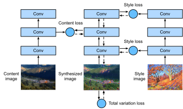
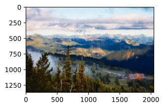
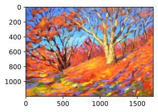
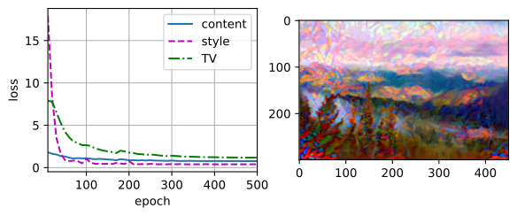

Chuyển Đổi Phong Cách Bằng Mạng Nơ-Ron¶
Nếu bạn là người yêu thích nhiếp ảnh, có thể bạn đã quen với bộ lọc. Nó có thể thay đổi phong cách màu sắc của ảnh để ảnh phong cảnh trở nên sắc nét hơn hoặc ảnh chân dung có làn da trắng hơn. Tuy nhiên, một bộ lọc thường chỉ thay đổi một khía cạnh của bức ảnh. Để áp dụng một phong cách lý tưởng cho một bức ảnh, có lẽ bạn cần thử nhiều tổ hợp bộ lọc khác nhau. Quá trình này phức tạp như việc tinh chỉnh siêu tham số của một mô hình.
Trong mục này, chúng ta sẽ tận dụng các biểu diễn theo tầng của một CNN để tự động áp dụng phong cách của một ảnh lên một ảnh khác, tức chuyển đổi phong cách [Gatys.Ecker.Bethge.2016]. Tác vụ này cần hai ảnh đầu vào: một ảnh là ảnh nội dung và ảnh còn lại là ảnh phong cách. Chúng ta sẽ dùng mạng nơ-ron để chỉnh sửa ảnh nội dung sao cho nó gần với ảnh phong cách về phong cách. Ví dụ, ảnh nội dung trong fig_style_transfer là một ảnh phong cảnh do chúng tôi chụp ở Vườn quốc gia Mount Rainier ngoại ô Seattle, còn ảnh phong cách là một bức tranh sơn dầu với chủ đề cây sồi mùa thu. Trong ảnh tổng hợp đầu ra, các nét cọ dầu của ảnh phong cách được áp dụng, tạo ra màu sắc sống động hơn, trong khi vẫn giữ hình dạng chính của các đối tượng trong ảnh nội dung.

Phương Pháp¶
fig_style_transfer_model minh họa phương pháp chuyển đổi phong cách dựa trên CNN bằng một ví dụ đơn giản hóa. Trước hết, chúng ta khởi tạo ảnh tổng hợp, chẳng hạn bằng ảnh nội dung. Ảnh tổng hợp này là biến duy nhất cần được cập nhật trong quá trình chuyển đổi phong cách, tức là các tham số mô hình cần được cập nhật trong huấn luyện. Sau đó, chúng ta chọn một CNN đã huấn luyện trước để trích xuất đặc trưng ảnh và đóng băng các tham số mô hình của nó trong quá trình huấn luyện. CNN sâu này dùng nhiều tầng để trích xuất các đặc trưng phân cấp cho ảnh. Chúng ta có thể chọn đầu ra của một số tầng này làm đặc trưng nội dung hoặc đặc trưng phong cách. Lấy fig_style_transfer_model làm ví dụ. Mạng nơ-ron đã huấn luyện trước ở đây có 3 tầng tích chập, trong đó tầng thứ hai xuất ra đặc trưng nội dung, còn tầng thứ nhất và thứ ba xuất ra đặc trưng phong cách.

Tiếp theo, chúng ta tính hàm mất mát của chuyển đổi phong cách thông qua lan truyền xuôi (hướng mũi tên liền), và cập nhật tham số mô hình (ảnh tổng hợp đầu ra) thông qua lan truyền ngược (hướng mũi tên nét đứt). Hàm mất mát thường dùng trong chuyển đổi phong cách gồm ba phần: (i) mất mát nội dung làm cho ảnh tổng hợp và ảnh nội dung gần nhau về đặc trưng nội dung; (ii) mất mát phong cách làm cho ảnh tổng hợp và ảnh phong cách gần nhau về đặc trưng phong cách; và (iii) mất mát biến thiên toàn phần giúp giảm nhiễu trong ảnh tổng hợp. Cuối cùng, khi quá trình huấn luyện mô hình kết thúc, chúng ta xuất các tham số mô hình của chuyển đổi phong cách để tạo ra ảnh tổng hợp cuối cùng.
Sau đây, chúng ta sẽ giải thích các chi tiết kỹ thuật của chuyển đổi phong cách thông qua một thí nghiệm cụ thể.
[Đọc Ảnh Nội Dung và Ảnh Phong Cách]¶
Trước tiên, chúng ta đọc ảnh nội dung và ảnh phong cách. Từ các trục tọa độ được in ra, ta có thể thấy rằng các ảnh này có kích thước khác nhau.
#@tab mxnet
%matplotlib inline
from d2l import mxnet as d2l
from mxnet import autograd, gluon, image, init, np, npx
from mxnet.gluon import nn
npx.set_np()
d2l.set_figsize()
content_img = image.imread('../img/rainier.jpg')
d2l.plt.imshow(content_img.asnumpy());

#@tab pytorch
%matplotlib inline
from d2l import torch as d2l
import torch
import torchvision
from torch import nn
d2l.set_figsize()
content_img = d2l.Image.open('../img/rainier.jpg')
d2l.plt.imshow(content_img);


[Tiền Xử Lý và Hậu Xử Lý]¶
Bên dưới, chúng ta định nghĩa hai hàm để tiền xử lý và hậu xử lý ảnh.
Hàm preprocess chuẩn hóa
từng kênh trong ba kênh RGB của ảnh đầu vào và biến đổi kết quả thành định dạng đầu vào của CNN.
Hàm postprocess khôi phục giá trị pixel trong ảnh đầu ra về giá trị ban đầu trước khi chuẩn hóa.
Vì hàm in ảnh yêu cầu mỗi pixel có giá trị dấu phẩy động từ 0 đến 1,
chúng ta thay bất kỳ giá trị nào nhỏ hơn 0 hoặc lớn hơn 1 lần lượt bằng 0 hoặc 1.
#@tab mxnet
rgb_mean = np.array([0.485, 0.456, 0.406])
rgb_std = np.array([0.229, 0.224, 0.225])
def preprocess(img, image_shape):
img = image.imresize(img, *image_shape)
img = (img.astype('float32') / 255 - rgb_mean) / rgb_std
return np.expand_dims(img.transpose(2, 0, 1), axis=0)
def postprocess(img):
img = img[0].as_in_ctx(rgb_std.ctx)
return (img.transpose(1, 2, 0) * rgb_std + rgb_mean).clip(0, 1)
#@tab pytorch
rgb_mean = torch.tensor([0.485, 0.456, 0.406])
rgb_std = torch.tensor([0.229, 0.224, 0.225])
def preprocess(img, image_shape):
transforms = torchvision.transforms.Compose([
torchvision.transforms.Resize(image_shape),
torchvision.transforms.ToTensor(),
torchvision.transforms.Normalize(mean=rgb_mean, std=rgb_std)])
return transforms(img).unsqueeze(0)
def postprocess(img):
img = img[0].to(rgb_std.device)
img = torch.clamp(img.permute(1, 2, 0) * rgb_std + rgb_mean, 0, 1)
return torchvision.transforms.ToPILImage()(img.permute(2, 0, 1))
[Trích Xuất Đặc Trưng]¶
Chúng ta dùng mô hình VGG-19 đã huấn luyện trước trên tập dữ liệu ImageNet để trích xuất đặc trưng ảnh [Gatys.Ecker.Bethge.2016].
Để trích xuất đặc trưng nội dung và đặc trưng phong cách của ảnh, chúng ta có thể chọn đầu ra của một số tầng nhất định trong mạng VGG.
Nói chung, càng gần tầng đầu vào thì càng dễ trích xuất chi tiết của ảnh, và ngược lại, càng dễ trích xuất thông tin toàn cục của ảnh. Để tránh giữ lại quá nhiều
chi tiết của ảnh nội dung trong ảnh tổng hợp,
chúng ta chọn một tầng VGG gần đầu ra hơn làm tầng nội dung để xuất ra đặc trưng nội dung của ảnh.
Chúng ta cũng chọn đầu ra của các tầng VGG khác nhau để trích xuất đặc trưng phong cách cục bộ và toàn cục.
Các tầng này còn được gọi là tầng phong cách.
Như đã đề cập trong sec_vgg,
mạng VGG dùng 5 khối tích chập.
Trong thí nghiệm, chúng ta chọn tầng tích chập cuối cùng của khối tích chập thứ tư làm tầng nội dung, và tầng tích chập đầu tiên của mỗi khối tích chập làm tầng phong cách.
Chỉ số của các tầng này có thể được lấy bằng cách in thực thể pretrained_net.
Khi trích xuất đặc trưng bằng các tầng VGG,
chúng ta chỉ cần dùng tất cả các tầng
từ tầng đầu vào đến tầng nội dung hoặc tầng phong cách gần đầu ra nhất.
Hãy xây dựng một thực thể mạng mới net, chỉ giữ lại tất cả các tầng VGG
cần dùng cho trích xuất đặc trưng.
#@tab mxnet
net = nn.Sequential()
for i in range(max(content_layers + style_layers) + 1):
net.add(pretrained_net.features[i])
#@tab pytorch
net = nn.Sequential(*[pretrained_net.features[i] for i in
range(max(content_layers + style_layers) + 1)])
Với đầu vào X, nếu ta chỉ gọi
lan truyền xuôi net(X), ta chỉ có thể nhận đầu ra của tầng cuối cùng.
Vì chúng ta cũng cần đầu ra của các tầng trung gian,
ta cần tính từng tầng một và giữ lại
các đầu ra của tầng nội dung và tầng phong cách.
#@tab all
def extract_features(X, content_layers, style_layers):
contents = []
styles = []
for i in range(len(net)):
X = net[i](X)
if i in style_layers:
styles.append(X)
if i in content_layers:
contents.append(X)
return contents, styles
Hai hàm được định nghĩa bên dưới:
hàm get_contents trích xuất đặc trưng nội dung từ ảnh nội dung,
và hàm get_styles trích xuất đặc trưng phong cách từ ảnh phong cách.
Vì không cần cập nhật tham số mô hình của VGG đã huấn luyện trước trong quá trình huấn luyện,
chúng ta có thể trích xuất các đặc trưng nội dung và phong cách
ngay cả trước khi huấn luyện bắt đầu.
Vì ảnh tổng hợp
là tập tham số mô hình cần được cập nhật
cho chuyển đổi phong cách,
ta chỉ có thể trích xuất đặc trưng nội dung và phong cách của ảnh tổng hợp bằng cách gọi hàm extract_features trong khi huấn luyện.
#@tab mxnet
def get_contents(image_shape, device):
content_X = preprocess(content_img, image_shape).copyto(device)
contents_Y, _ = extract_features(content_X, content_layers, style_layers)
return content_X, contents_Y
def get_styles(image_shape, device):
style_X = preprocess(style_img, image_shape).copyto(device)
_, styles_Y = extract_features(style_X, content_layers, style_layers)
return style_X, styles_Y
#@tab pytorch
def get_contents(image_shape, device):
content_X = preprocess(content_img, image_shape).to(device)
contents_Y, _ = extract_features(content_X, content_layers, style_layers)
return content_X, contents_Y
def get_styles(image_shape, device):
style_X = preprocess(style_img, image_shape).to(device)
_, styles_Y = extract_features(style_X, content_layers, style_layers)
return style_X, styles_Y
[Định Nghĩa Hàm Mất Mát]¶
Bây giờ chúng ta sẽ mô tả hàm mất mát cho chuyển đổi phong cách. Hàm mất mát gồm mất mát nội dung, mất mát phong cách, và mất mát biến thiên toàn phần.
Mất Mát Nội Dung¶
Tương tự hàm mất mát trong hồi quy tuyến tính,
mất mát nội dung đo sai khác
về đặc trưng nội dung
giữa ảnh tổng hợp và ảnh nội dung thông qua
hàm mất mát bình phương.
Hai đầu vào của hàm mất mát bình phương
đều là
đầu ra của tầng nội dung được tính bởi hàm extract_features.
#@tab pytorch
def content_loss(Y_hat, Y):
# We detach the target content from the tree used to dynamically compute
# the gradient: this is a stated value, not a variable. Otherwise the loss
# will throw an error.
return torch.square(Y_hat - Y.detach()).mean()
Mất Mát Phong Cách¶
Mất mát phong cách, tương tự mất mát nội dung,
cũng dùng hàm mất mát bình phương để đo sai khác về phong cách giữa ảnh tổng hợp và ảnh phong cách.
Để biểu diễn đầu ra phong cách của bất kỳ tầng phong cách nào,
trước hết chúng ta dùng hàm extract_features để
tính đầu ra của tầng phong cách.
Giả sử đầu ra có
1 ví dụ, \(c\) kênh,
chiều cao \(h\), và chiều rộng \(w\),
chúng ta có thể biến đổi đầu ra này thành
ma trận \(\mathbf{X}\) với \(c\) hàng và \(hw\) cột.
Ma trận này có thể được xem như
phép nối của
\(c\) vector \(\mathbf{x}_1, \ldots, \mathbf{x}_c\),
mỗi vector có độ dài \(hw\).
Ở đây, vector \(\mathbf{x}_i\) biểu diễn đặc trưng phong cách của kênh \(i\).
Trong ma trận Gram của các vector này \(\mathbf{X}\mathbf{X}^\top \in \mathbb{R}^{c \times c}\), phần tử \(x_{ij}\) ở hàng \(i\) và cột \(j\) là tích vô hướng của các vector \(\mathbf{x}_i\) và \(\mathbf{x}_j\).
Nó biểu diễn tương quan của các đặc trưng phong cách ở kênh \(i\) và \(j\).
Chúng ta dùng ma trận Gram này để biểu diễn đầu ra phong cách của bất kỳ tầng phong cách nào.
Lưu ý rằng khi giá trị \(hw\) lớn hơn,
nó có khả năng dẫn tới các giá trị lớn hơn trong ma trận Gram.
Cũng lưu ý rằng chiều cao và chiều rộng của ma trận Gram đều là số kênh \(c\).
Để mất mát phong cách không bị ảnh hưởng
bởi các giá trị này,
hàm gram bên dưới chia
ma trận Gram cho số phần tử của nó, tức \(chw\).
#@tab all
def gram(X):
num_channels, n = X.shape[1], d2l.size(X) // X.shape[1]
X = d2l.reshape(X, (num_channels, n))
return d2l.matmul(X, X.T) / (num_channels * n)
Rõ ràng,
hai đầu vào ma trận Gram của hàm mất mát bình phương cho mất mát phong cách dựa trên
đầu ra tầng phong cách của
ảnh tổng hợp và ảnh phong cách.
Ở đây giả sử rằng ma trận Gram gram_Y dựa trên ảnh phong cách đã được tính trước.
#@tab pytorch
def style_loss(Y_hat, gram_Y):
return torch.square(gram(Y_hat) - gram_Y.detach()).mean()
Mất Mát Biến Thiên Toàn Phần¶
Đôi khi, ảnh tổng hợp học được có nhiều nhiễu tần số cao, tức là các pixel đặc biệt sáng hoặc tối. Một phương pháp giảm nhiễu thường dùng là khử nhiễu biến thiên toàn phần. Ký hiệu \(x_{i, j}\) là giá trị pixel tại tọa độ \((i, j)\). Giảm mất mát biến thiên toàn phần
làm cho giá trị của các pixel lân cận trên ảnh tổng hợp gần nhau hơn.
#@tab all
def tv_loss(Y_hat):
return 0.5 * (d2l.abs(Y_hat[:, :, 1:, :] - Y_hat[:, :, :-1, :]).mean() +
d2l.abs(Y_hat[:, :, :, 1:] - Y_hat[:, :, :, :-1]).mean())
Hàm Mất Mát¶
[Hàm mất mát của chuyển đổi phong cách là tổng có trọng số của mất mát nội dung, mất mát phong cách, và mất mát biến thiên toàn phần]. Bằng cách điều chỉnh các siêu tham số trọng số này, chúng ta có thể cân bằng giữa giữ lại nội dung, chuyển đổi phong cách, và giảm nhiễu trên ảnh tổng hợp.
#@tab all
content_weight, style_weight, tv_weight = 1, 1e4, 10
def compute_loss(X, contents_Y_hat, styles_Y_hat, contents_Y, styles_Y_gram):
# Calculate the content, style, and total variance losses respectively
contents_l = [content_loss(Y_hat, Y) * content_weight for Y_hat, Y in zip(
contents_Y_hat, contents_Y)]
styles_l = [style_loss(Y_hat, Y) * style_weight for Y_hat, Y in zip(
styles_Y_hat, styles_Y_gram)]
tv_l = tv_loss(X) * tv_weight
# Add up all the losses
l = sum(styles_l + contents_l + [tv_l])
return contents_l, styles_l, tv_l, l
[Khởi Tạo Ảnh Tổng Hợp]¶
Trong chuyển đổi phong cách,
ảnh tổng hợp là biến duy nhất cần được cập nhật trong quá trình huấn luyện.
Vì vậy, chúng ta có thể định nghĩa một mô hình đơn giản, SynthesizedImage, và xem ảnh tổng hợp như các tham số mô hình.
Trong mô hình này, lan truyền xuôi chỉ trả về các tham số mô hình.
#@tab mxnet
class SynthesizedImage(nn.Block):
def __init__(self, img_shape, **kwargs):
super(SynthesizedImage, self).__init__(**kwargs)
self.weight = self.params.get('weight', shape=img_shape)
def forward(self):
return self.weight.data()
#@tab pytorch
class SynthesizedImage(nn.Module):
def __init__(self, img_shape, **kwargs):
super(SynthesizedImage, self).__init__(**kwargs)
self.weight = nn.Parameter(torch.rand(*img_shape))
def forward(self):
return self.weight
Tiếp theo, chúng ta định nghĩa hàm get_inits.
Hàm này tạo một thực thể mô hình ảnh tổng hợp và khởi tạo nó bằng ảnh X.
Các ma trận Gram cho ảnh phong cách tại các tầng phong cách khác nhau, styles_Y_gram, được tính trước khi huấn luyện.
#@tab mxnet
def get_inits(X, device, lr, styles_Y):
gen_img = SynthesizedImage(X.shape)
gen_img.initialize(init.Constant(X), ctx=device, force_reinit=True)
trainer = gluon.Trainer(gen_img.collect_params(), 'adam',
{'learning_rate': lr})
styles_Y_gram = [gram(Y) for Y in styles_Y]
return gen_img(), styles_Y_gram, trainer
#@tab pytorch
def get_inits(X, device, lr, styles_Y):
gen_img = SynthesizedImage(X.shape).to(device)
gen_img.weight.data.copy_(X.data)
trainer = torch.optim.Adam(gen_img.parameters(), lr=lr)
styles_Y_gram = [gram(Y) for Y in styles_Y]
return gen_img(), styles_Y_gram, trainer
[Huấn Luyện]¶
Khi huấn luyện mô hình cho chuyển đổi phong cách, chúng ta liên tục trích xuất đặc trưng nội dung và đặc trưng phong cách của ảnh tổng hợp, rồi tính hàm mất mát. Bên dưới định nghĩa vòng lặp huấn luyện.
#@tab mxnet
def train(X, contents_Y, styles_Y, device, lr, num_epochs, lr_decay_epoch):
X, styles_Y_gram, trainer = get_inits(X, device, lr, styles_Y)
animator = d2l.Animator(xlabel='epoch', ylabel='loss',
xlim=[10, num_epochs], ylim=[0, 20],
legend=['content', 'style', 'TV'],
ncols=2, figsize=(7, 2.5))
for epoch in range(num_epochs):
with autograd.record():
contents_Y_hat, styles_Y_hat = extract_features(
X, content_layers, style_layers)
contents_l, styles_l, tv_l, l = compute_loss(
X, contents_Y_hat, styles_Y_hat, contents_Y, styles_Y_gram)
l.backward()
trainer.step(1)
if (epoch + 1) % lr_decay_epoch == 0:
trainer.set_learning_rate(trainer.learning_rate * 0.8)
if (epoch + 1) % 10 == 0:
animator.axes[1].imshow(postprocess(X).asnumpy())
animator.add(epoch + 1, [float(sum(contents_l)),
float(sum(styles_l)), float(tv_l)])
return X
#@tab pytorch
def train(X, contents_Y, styles_Y, device, lr, num_epochs, lr_decay_epoch):
X, styles_Y_gram, trainer = get_inits(X, device, lr, styles_Y)
scheduler = torch.optim.lr_scheduler.StepLR(trainer, lr_decay_epoch, 0.8)
animator = d2l.Animator(xlabel='epoch', ylabel='loss',
xlim=[10, num_epochs],
legend=['content', 'style', 'TV'],
ncols=2, figsize=(7, 2.5))
for epoch in range(num_epochs):
trainer.zero_grad()
contents_Y_hat, styles_Y_hat = extract_features(
X, content_layers, style_layers)
contents_l, styles_l, tv_l, l = compute_loss(
X, contents_Y_hat, styles_Y_hat, contents_Y, styles_Y_gram)
l.backward()
trainer.step()
scheduler.step()
if (epoch + 1) % 10 == 0:
animator.axes[1].imshow(postprocess(X))
animator.add(epoch + 1, [float(sum(contents_l)),
float(sum(styles_l)), float(tv_l)])
return X
Bây giờ chúng ta [bắt đầu huấn luyện mô hình]. Chúng ta đổi tỉ lệ chiều cao và chiều rộng của ảnh nội dung và ảnh phong cách thành 300 x 450 pixel. Chúng ta dùng ảnh nội dung để khởi tạo ảnh tổng hợp.
#@tab mxnet
device, image_shape = d2l.try_gpu(), (450, 300)
net.collect_params().reset_ctx(device)
content_X, contents_Y = get_contents(image_shape, device)
_, styles_Y = get_styles(image_shape, device)
output = train(content_X, contents_Y, styles_Y, device, 0.9, 500, 50)
#@tab pytorch
device, image_shape = d2l.try_gpu(), (300, 450) # PIL Image (h, w)
net = net.to(device)
content_X, contents_Y = get_contents(image_shape, device)
_, styles_Y = get_styles(image_shape, device)
output = train(content_X, contents_Y, styles_Y, device, 0.3, 500, 50)
Ta có thể thấy rằng ảnh tổng hợp giữ lại cảnh vật và đối tượng của ảnh nội dung, đồng thời chuyển màu sắc của ảnh phong cách sang ảnh đó. Ví dụ, ảnh tổng hợp có các mảng màu giống như trong ảnh phong cách. Một số mảng này thậm chí còn có kết cấu tinh tế của nét cọ.
Tóm Tắt¶
- Hàm mất mát thường dùng trong chuyển đổi phong cách gồm ba phần: (i) mất mát nội dung làm cho ảnh tổng hợp và ảnh nội dung gần nhau về đặc trưng nội dung; (ii) mất mát phong cách làm cho ảnh tổng hợp và ảnh phong cách gần nhau về đặc trưng phong cách; và (iii) mất mát biến thiên toàn phần giúp giảm nhiễu trong ảnh tổng hợp.
- Chúng ta có thể dùng một CNN đã huấn luyện trước để trích xuất đặc trưng ảnh và tối thiểu hóa hàm mất mát để liên tục cập nhật ảnh tổng hợp như các tham số mô hình trong quá trình huấn luyện.
- Chúng ta dùng ma trận Gram để biểu diễn đầu ra phong cách từ các tầng phong cách.
Bài Tập¶
- Đầu ra thay đổi như thế nào khi bạn chọn các tầng nội dung và tầng phong cách khác nhau?
- Điều chỉnh các siêu tham số trọng số trong hàm mất mát. Đầu ra giữ lại nhiều nội dung hơn hay có ít nhiễu hơn?
- Dùng các ảnh nội dung và ảnh phong cách khác nhau. Bạn có thể tạo ra các ảnh tổng hợp thú vị hơn không?
- Chúng ta có thể áp dụng chuyển đổi phong cách cho văn bản không? Gợi ý: bạn có thể tham khảo bài khảo sát của 10.1145/3544903.3544906.